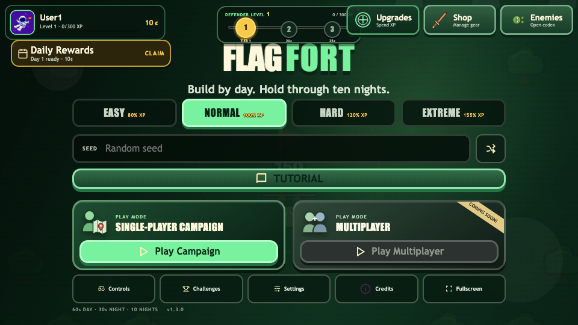
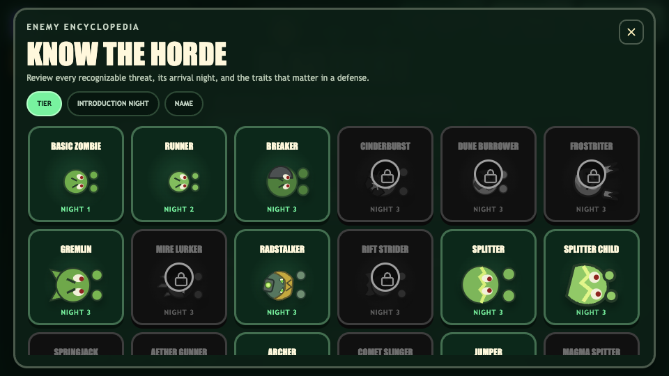
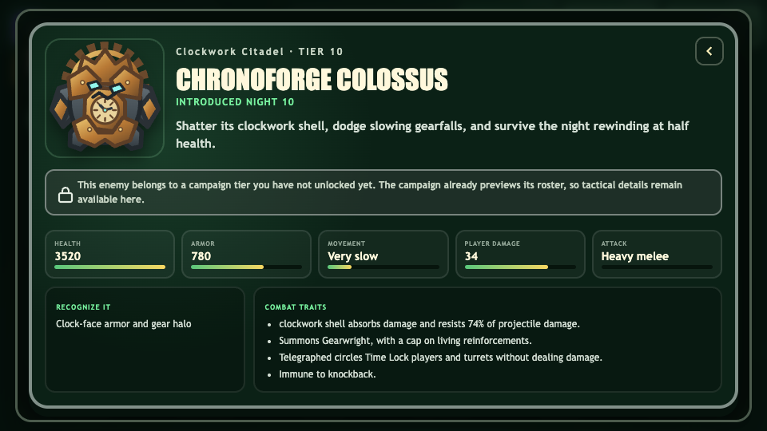
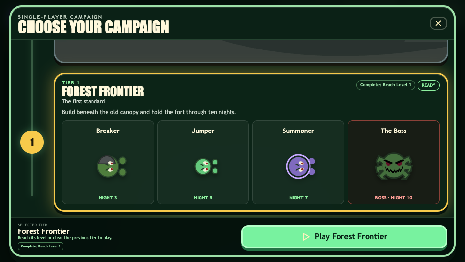

41
Registry enemies
Every zombie and boss appears in the sortable encyclopedia without modal-only metadata.
Implementation review
The enemy presentation and combat fixes are implemented through the existing registry, shared navigation, status-effect, rendering, and boss lifecycle systems. Deterministic behavior and canonical audio are preserved.
Every zombie and boss appears in the sortable encyclopedia without modal-only metadata.
The effective range is exactly 75 percent of its previous 735 pixel value.
Active Time Lock durations never restart, while projectile damage still resolves normally.
Chronoforge rewinds on its first armor break and cannot trigger the transition again.




| System | Previous failure | Implemented behavior | Evidence |
|---|---|---|---|
| Basic mutation art | A Basic-zombie mutation could show the Runner portrait. | Mutation art explicitly resolves the Basic registry portrait. Other cards retain their correct registry mapping. | UI regression test |
| Harvester targeting | A path could end through resource geometry, causing repeated direction reversals. | Blocked goal cells select a deterministic reachable interaction cell. Shared stuck-blocker logic still attacks genuine structural blockers. | 360-step route test |
| Aether Time Lock | Repeated impacts could keep restarting the lock window. | The shared status application returns false for an active lock. Damage remains independent from status application. | Two-gunner test |
| Chronoforge rewind | Armor broke normally because rewind still depended on a later health crossing. | The first shell break starts the carefully preserved rewind lifecycle and marks the one-shot transition before temporary removal. | State-preservation test |
| Chronoforge circles | The boss inherited damaging spike resolution. | Telegraphed circles resolve to non-damaging cyan Time Lock effects for players and turrets only. | Target matrix test |
| Harvester layering | Neighbor structures could cover moving harvester arms. | All structure bases draw first, followed by one final harvester-arm overlay pass. | Renderer ordering |
npm test: 34 files and 515 tests passed.npm run build: TypeScript and Vite production build passed.npm run visual:validate: 362 editable SVGs, 41 card illustrations, 75 gameplay assets, and 20 structure reference groups passed.git diff --check: clean.